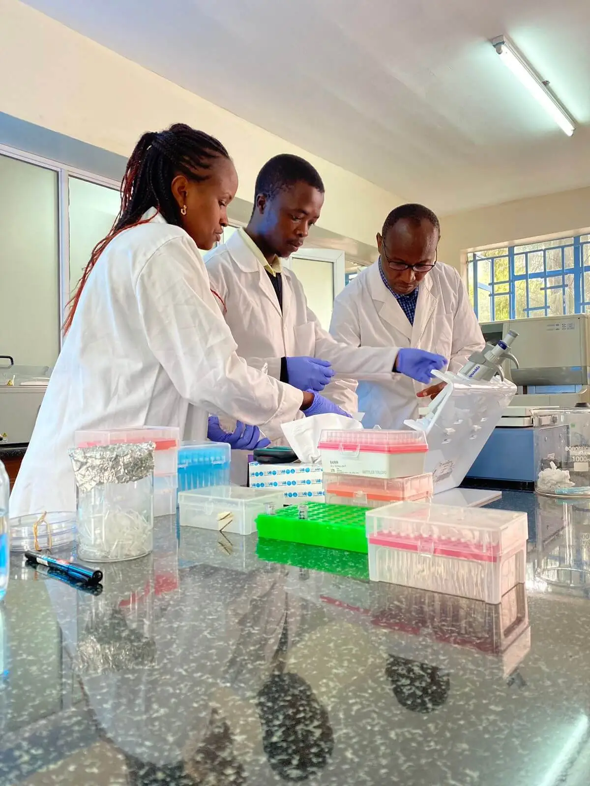
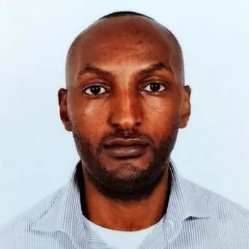

Pioneering Placental Research
for a Healthier Africa
Based at Mount Kenya University, supported by a Wellcome Trust Discovery Award, we are transforming maternal and newborn health through breakthrough science and community action.
About the Centre
The Center for Placental Research is a research group dedicated to advancing the understanding of placental biology in maternal and fetal health. Our work focuses on the mechanisms underlying placental function and dysfunction, with particular emphasis on placental malaria, host–pathogen interactions, and their impact on pregnancy outcomes.
We employ integrated laboratory, clinical, and field-based approaches to investigate how infectious diseases and other factors influence placental development and function, particularly in resource-limited settings. Our research aims to generate high-quality evidence to inform improved diagnostics, preventive strategies, and interventions in maternal and neonatal health.
The Center is also committed to training and mentoring scientists, strengthening research capacity, and contributing to locally grounded, globally relevant scientific discovery.
Our Purpose
Driven by a clear mission and a bold vision for maternal health
Mission
To discover, diagnose, and dismantle pregnancy diseases through innovative research, advanced diagnostics, and community engagement – ensuring healthier outcomes for mothers and babies across Africa.
Active Every DayVision
A future where no mother or baby suffers from preventable placental diseases, where Africa leads pregnancy research, and scientific breakthroughs reach every community that needs them.
Future Focused
Our Heritage & Future
Founded in 2024 through a landmark Wellcome Trust Discovery Award, the MKU Centre for Placenta Research (CPR) was born from a critical need: the lack of specialized pregnancy disease research focused specifically on African genetics and environmental factors.
Today, we represent the vanguard of maternal health science in the region, bridging the gap between molecular biology and grassroots clinical practice. Our roadmap for the next decade includes establishing the continent's first open-access placental biobank and expanding our genomic surveillance network to ten Sub-Saharan nations.
Why Mount Kenya University?
As a leading private university in Kenya, MKU has a strong track record in health sciences and research innovation. The Centre for Placenta Research benefits from state‑of‑the‑art laboratories, a collaborative research culture, and deep community ties across the country.
Navigating the Centre
A quick guide to finding what you need on our portal
Research Focus Areas
Targeting the most urgent challenges in maternal‑fetal health
Malaria in Pregnancy
Deciphering molecular mechanisms of placental malaria to develop early diagnostic tools and therapeutic interventions.
Diagnostic Innovation
Creating rapid, affordable point‑of‑care tests for placental diseases using CRISPR and lab‑on‑chip technologies.
Genomic Surveillance
Tracking drug resistance and pathogen evolution to inform targeted intervention strategies.
Maternal Health Systems
Strengthening healthcare delivery through implementation science and community‑based programs.
Leadership Team
World‑class experts driving our research mission
Prof. Jesse Gitaka
Director
Leading expert in placental malaria with 15+ years’ experience.
Dr. Bernard Kanoi
Deputy Director
Specialist in malaria immuno-epidemiology and vaccine development.

Dr. Kobia Francis
Research Lead
Expert in molecular basis of fetal-maternal innate immune conflict.
Support Our Science
The MKU Centre for Placenta Research is a non-profit academic institution. Every dollar donated directly funds life-saving tools like CRISPR-based diagnostic kits and free prenatal screenings for high-risk communities.
Your contribution helps us train the next generation of African scientists and keep our laboratories at the cutting edge of global medicine.
Ways to Give
- International Wire / Bank Transfer
- M-PESA Paybill: 522522 (Acc: 01100 CPR)
- Research Partnership Programs
Ready to make an impact?
Whether you are a researcher, a philanthropist, or a community leader, we invite you to join our journey towards healthier pregnancies across Africa.